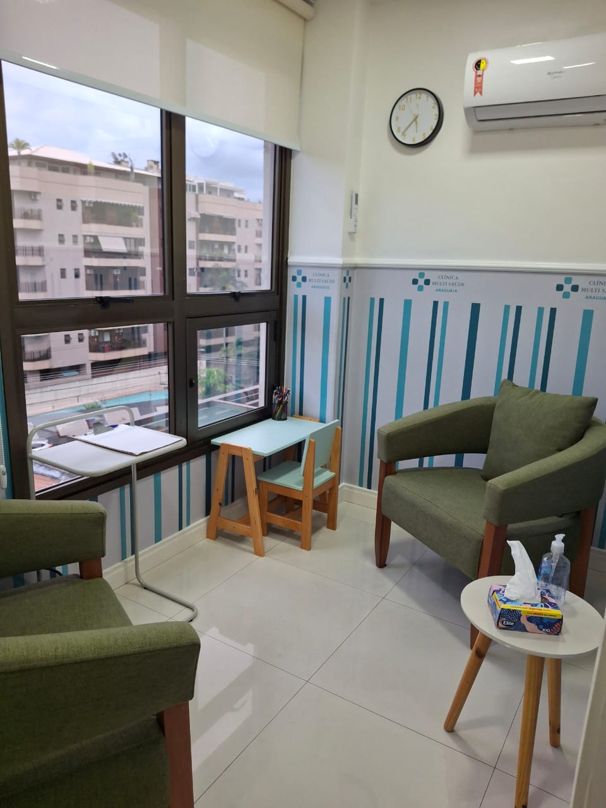

Nossa equipe
Profissionais qualificados trabalhando em conjunto para oferecer cuidado integral, humano e individualizado.
Fale conosco
Cuidado multidisciplinar
Uma equipe preparada para acolher cada pessoa com atenção.
A Clínica Multi Saúde Araguaia reúne diferentes especialidades para construir planos terapêuticos que respeitam a história, as necessidades e o ritmo de cada paciente.

Nossa equipe clínica
Profissionais cadastrados
Fernanda Rodrigues
Psicóloga e diretora da clínica
CRP 05/02962
Pós-graduação em Psicanálise.
Cadastrada como Perita do Tribunal de Justiça do Estado do Rio de Janeiro há mais de 10 anos.
Responsável técnica pela integração da equipe e pela qualidade do cuidado oferecido pela clínica.
Maria do Socorro Teixeira dos Santos
Neuropsicóloga
CRP 05-56344
Pós-graduação em Neuropsicologia.
Consultório de psicologia, avaliação neuropsicológica e reabilitação cognitiva.
Sara Souza
Neuropsicóloga
CRP 05-1525
Pós-graduação em Neuropsicologia.
Avaliação e acompanhamento de funções cognitivas, emocionais e comportamentais.
Tereza Cristina da Silva Telles
Neuropsicopedagoga
SBNPp 1562 | CRPp 205 | ABPp 1081
Pós-graduação em Neuropsicopedagogia.
Apoio especializado para aprendizagem, desenvolvimento cognitivo e estratégias educacionais.
Priscila Novato de Braga Mello
Fonoaudióloga
CRFa 1-15147
Pós-graduação em Fonoaudiologia.
Suporte para comunicação, linguagem, voz, fala e desenvolvimento.
Rossane Teixeira de Almeida Raimundi
Fonoaudióloga
CRFa 1-5358
Pós-graduação em Fonoaudiologia.
Suporte para comunicação, linguagem, voz, fala e desenvolvimento.
Edmundo José Corrêa
Psiquiatra
CRM 52-37827-4
Pós-graduação em Psiquiatria.
Avaliação clínica e cuidado médico em saúde mental quando necessário.
Bruna Novato de Braga Mello Lima
Nutricionista e Terapeuta alimentar
CRN 11100004-4
Pós-graduação em Terapia Alimentar.
Orientação alimentar individualizada e apoio para hábitos mais saudáveis.
Giselle Gomes Silva
Terapeuta ocupacional
Crefito 014159-TO
Pós-graduação em Terapia Ocupacional.
Intervenções para autonomia, rotina, habilidades funcionais e qualidade de vida.
Daniele da Silva Reis
Psicóloga
CRP 05-50165
Pós-graduanda em Psicologia Clínica.
Acompanhamento clínico profissional com o objetivo de ouvir seu subconsciente, oferecendo o melhor tratamento possível.
Victória Marcelle Campos Rocha
Psicóloga
CRP 05-79335
Pós-graduação em Psicologia.
Escuta qualificada, acompanhamento terapêutico e apoio em saúde emocional.
Alexya Gama Oliveira
Psicóloga
CRP 05-79112
Pós-graduação em Psicologia.
Desafios e necessidades considerados para oferecer o melhor suporte possível com acompanhamento individualizado.
Trabalho em conjunto
Nossa abordagem interdisciplinar permite que os profissionais troquem informações e alinhem estratégias para promover um cuidado mais completo.
Planos individualizados
Cada pessoa recebe uma proposta de acompanhamento pensada para suas particularidades, objetivos e fase de desenvolvimento.